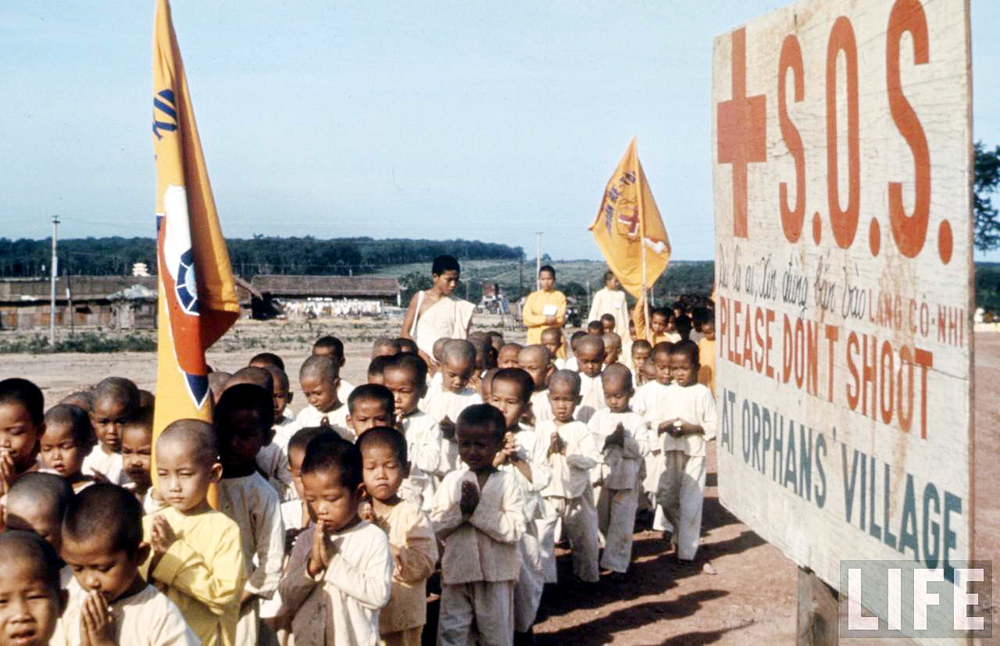

Với số tiền ăn đã đóng hơn 13.000 đ cho một tháng, ngay buổi chiều nhập trường Trưng vương, mọi người đã nhìn thấy nhiều chiếc xe của nhà hàng Á Đông và nhà hàng Đồng Khánh chở thức ăn tới. Bữa ăn sang trọng gấp 3, gấp 4 một bữa ăn thông thường hàng ngày! Sự yên tâm, phấn khởi nhờ thế mà tăng lên.
Khoảng 10 giờ 30 tối hôm sau, 16.6.1975, mọi người được lệnh tập trung hết dưới sân trường Trưng vương, mang theo đầy đủ tư trang, vật dụng. Sau những thông báo và quy định cần thiết về trật tự, sự im lặng cần thiết trong hành trình sắp tới, mọi người lặng lẽ leo lên những chiếc xe GMC bít bùng, khung xe được bao bọc bởi những tấm bạt nối với nhau, để lộ nhiều chỗ hở, giúp người trong xe có thể nhìn thoáng ra ngoài.
Xe bắt đầu lăn bánh vào khoảng 11 giờ khuya, trong một thành phố ngủ yên như đã chết. Chúng tôi nhìn vẻ im vắng của nó qua những khe hở của tấm bạt phủ trùm xe, biết rằng xe đang chạy về hướng Biên Hòa. Rồi xe rẽ phải về hướng Vũng Tàu. Có những tiếng thì thào: chẳng lẽ họ sẽ đưa mình xuống tàu?
Câu hỏi được sớm trả lời khi xe đột ngột dừng lại và rẽ trái, đi lên một khoảng dốc lài. Rồi xe dừng hẳn, tắt máy. Chúng tôi nhảy xuống xe. Một vài người chợt nhận ra đây từng là “Làng cô nhi Long Thành”, nơi mà trước đó vài năm, cứ vào mỗi chủ nhật, nhiều người kéo nhau lên để thực hiện công tác thiện nguyện đối với hàng ngàn em cô nhi bất hạnh. Người điều hành Làng cô nhi lúc đó có cái tên mộc mạc là “ông Tư Sự”, sau nghe nói là người của bên thắng cuộc.
Làng cô nhi Long Thành đêm 16.6 ấy chỉ còn là một khu vực hoang vu, những dãy nhà dài trống hoác, im lìm. Theo sự sắp xếp đội, tổ khi chúng tôi vào trình diện ở trường Trưng vương, mỗi người được phân vào một dãy nhà dài độ 60 mét, ngăn thành 4 căn, dãy đầu tiên mang số 1, còn gọi là A16, dãy số 2 là A14, và cứ như thế tiến dần lên. Tiếp nhận chúng tôi là những cán bộ miền Nam tập kết, vui vẻ, thân thiện. Tại nhà 2, nơi tôi đến, anh cán bộ bỏ tiền túi ra đi mua những khoanh kẽm giăng dọc theo nhà để mọi người có chỗ máng dây mùng.
Tiếc là những con người vẫn còn mang dáng dấp chơn chất, dễ gần ấy chỉ tạm thời đảm nhận công việc, trong lúc đợi trung ương cử về những cán bộ chuyên trách thuộc Cục quản lý trại giam Bộ Nội vụ. Và ngày ấy đã đến, chỉ sau không đầy một tuần lễ, với những cán bộ mới phần lớn xuất phát từ Nghệ An, Hà Tĩnh, Thanh Hóa... gương mặt khắc khổ và tiếng nói nặng chịch, khó nghe.
III) HỌC VIÊN HAY TRẠI VIÊN?
Trong khoảng thời gian tiếp sau tháng 6.1975 ấy, không phải mọi việc đều đã rõ ràng. Nhiều sự thực lộ dần ra, lâu hay chậm còn tùy vào sự tìm hiểu và nhạy bén của mỗi người.
Trước tiên là cách gọi dành cho những sĩ quan, viên chức chế độ VNCH đi học tập cải tạo (HTCT) dài hạn. Trong năm đầu tiên, họ được gọi là “học viên”, với cách hiểu họ còn là “nghi can”, chưa thành án. Cũng vì thế, làng cô nhi Lonh Thành, nơi họ đến học tập, có tên là “Trường 15 NV”, chứ chưa phải là “trại”. NV là cách viết tắt của hai chữ Nội vụ, trường do Cục quản lý trại giam, Bộ Nội vụ, trực tiếp quản lý, phân biệt với phần lớn các trường trại ở các tỉnh, do chính quyền địa phương trực tiếp quản lý.
Trong lúc các tướng tá được sắp xếp ở nhiều trung tâm khác nhau thì tất cả thành phần dân sự được tập trung hết vào trường 15 NV Long Thành (một huyện của tỉnh Đồng Nai lúc bấy giờ). Từ ngày 17.6.1975, nơi đây có gần 3.000 học viên, được chia thành 4 khối:
- Khối 1 đông đảo nhất gồm công chức hành chánh, thẩm phán, dân biểu, nghị sĩ.... Hầu hết “tinh hoa” của chế độ đã bại trận nằm trong khối này, từ ông cựu Chủ tịch Hạ viện, ông cựu Chủ tịch Tối cao pháp viện, đến ông cựu Tổng trưởng Tài chánh, các dân biểu, nghị sĩ trưởng khối trong Quốc hội…
- Khối 2 gồm thành viên các đảng phái “phản động” từ cấp Phó bí thư quận, huyện trở lên, nhiều nhất là đảng Dân Chủ của cựu Tổng thống Nguyễn Văn Thiệu, kế đến là các thành viên đảng Đại Việt và VN quốc dân đảng.
Trong khối này có ít nhất hai nhân vật nổi bật nhất.
Người thứ nhất là cụ Vũ Hồng Khanh, người từng lãnh đạo VN Quốc dân đảng và hợp tác cùng chủ tịch Hồ Chí Minh trong cuộc chiến chống Pháp sau năm 1945. Sau gần 50 năm, mình vẫn còn nhớ hình ảnh của cụ: búi tóc nhỏ sau gáy, bộ bà ba đen, chiều chiều, cụ hòa vào dòng người đi tản bộ trên “đại lộ hoàng hôn”. Khi đi, cụ hơi cúi người về phía trước, hai bàn tay nắm chặt lại phía sau lưng, rảo bước một mình, không trò chuyện với ai.
Người thứ hai là luật sư Nguyễn Lâm Sanh, trước tháng 4.1975 là Phó chủ tịch Liên minh Á châu chống Cộng (chủ tịch là ông Phan Huy Quát, cựu Thủ tướng VNCH, sau chết trong một trại cải tạo). Nghe kể rằng trước khi ra khu, luật sư Nguyễn Hữu Thọ có mở chung văn phòng với LS Sanh, khi ra khu, ông Thọ có nhờ ông Sanh chăm sóc giúp gia đình, và nghe đâu ông Sanh từng cho một người con trai của ông Thọ sang Pháp học (?). Những chi tiết này chì là nghe qua lời đồn đãi, còn cần kiểm chứng rõ ràng hơn, xin kể lại với tất cả sự dè dặt.
Đến khoảng tháng 10 năm 1975, Cục quản lý trại giam Bộ Nội vụ cử một đoàn cán bộ đông đảo lên Long Thành để hoàn tất hồ sơ mỗi học viên. Họ chụp ảnh, lăn tay và làm nhiều thủ tục cần thiết khác cho học viên. Nghe đâu ông Nguyễn Hữu Thọ, lúc đó là Phó Chủ tịch nước, có nhờ người con trai lên theo đoàn công tác, thăm LS Nguyễn Lâm Sanh, kèm theo mấy món quà. Đó cũng chỉ là “nghe đâu” thôi, xin không coi đó là thông tin có căn cứ xác đáng!
- Khối 3 gồm toàn các viên chức thuộc Phủ Đặc ủy trung ương tình báo, mà theo thông cáo của Ủy ban quân quản là “thuộc thành phần trung cấp trở lên”. Sự khác biệt trong cách hiểu từ “trung cấp” đã dẫn đến một hệ quả cười ra nước mắt. Người miền Nam lúc ấy hiểu từ công chức “trung cấp” là những người thuộc hạng B, từ ngạch thư ký đánh máy trở lên. Thế là các cô cậu nhân viên đánh máy ở Phủ Đặc ủy rùng rùng đi trình diện HTCT, một số rất đông là nữ.
Mãi đến khoảng 6 tháng sau, sau khi xem kỹ hồ sơ, biết họ chỉ là những nhân viên thừa hành cấp thấp, Cục quản lý trại giam đã trả tự do cho họ. Trong số những người về đợt này, có con trai anh Nguyễn Đình Xướng, người đàn anh của anh em QGHC, chức vụ cuối cùng là Tổng quản trị hành chánh Phủ Tổng thống, mà người viết bài này từng có một bài viết dài về anh trên Facebook.
Vẫn còn nhớ rõ hình ảnh anh Xướng đứng ở đầu nhà gọi nhắn theo cậu con trai hối hả đi theo đoàn người ra cổng trại trong ngày được trả tự do ấy.
Trong số các viên chức “trung cấp” thật sự của Phủ Đặc ủy T/Ư tình báo trình diện cải tạo thuộc khối 3, có khá nhiều người từng tốt nghiệp khóa Cao học Hành chánh. Trong một dịp họ sắp tốt nghiệp, Phủ Đặc ủy quá cần người, đã được phép Phủ Thủ tướng qua Học viện QGHC chọn nhiều người trong số họ để đưa sang Phủ làm việc ngay sau khi họ tốt nghiệp. Đa số những người này bị chọn ngoài ý muốn. Riêng người viết bài này có một người bạn đồng môn, đồng song, làm Chánh Sở Bắc Việt vụ tại Phủ nói trên, cái tên sở nghe qua đã lạnh người!
- Khối 4 gồm các sĩ quan cảnh sát từ cấp Thiếu tá trở lên. Trước năm 1972, khi ngành cảnh sát chưa chuyển qua chế độ cấp bậc như quân đội, họ là những viên chức thuộc ngạch Quận trưởng cảnh sát (có bằng Cử nhân luật trở lên), hoặc Biên tập viên cảnh sát có thâm niên. Đại đa số họ thuộc phái nam, chỉ có một số rất ít là nữ, trong đó có nữ Thiếu tá NTT, biệt đội trưởng biệt đội Thiên Nga, một tổ chức đặc biệt gồm toàn nữ trong guồng máy cảnh sát VNCH lúc bấy giờ.
Khối 1 đông hơn cả, được phân cho khoảng 6 dãy nhà, từ nhà 1 đến nhà 6, Dãy đầu tiên gọi là Nhà 1, có ít nhất hai nhân vật khá nổi tiếng thời đó. Đó là luật sư Trần Văn Tuyên, một nhân sĩ trí thức từng thuộc nhóm Caravelle, rất được công chúng ngưỡng mộ. Người thứ hai là nhà báo, nhà hoạt động chính trị Phạm Thái, bút danh của ông Nguyễn Ngọc Tân (?), thành viên đảng Đại Việt. Trong số mấy ngàn học viên ở Long Thành lúc đó, ông Phạm Thái có vinh dự được các phương tiện truyền thông nhắc đến nhiều về việc trước năm 1975, ông từng có bài báo lên án vở kịch Lá Sầu Riêng của kịch sĩ Kim Cương là sản phẩm tuyên truyền cho phía CS. Mà thật vậy, sau 1975, chính tác giả vở kịch và nhiều cây bút XHCN đã khẳng định điều đó.
Ông Phạm Thái thường qua nhà 2, nơi tui ở, để nói chuyện, và chứng tỏ một kiến văn quảng bác về nhiều vấn đề chính trị, xã hội trên thế giới. Theo yêu cầu của anh em, ông còn mở lớp dạy Hán văn, song chỉ mấy ngày sau, lớp học này bị buộc phải giải tán. Với quan điểm và quá trình hoạt động chính trị của ông, ai cũng nghĩ rằng thời gian ở trại của ông sẽ phải thâm niên hơn nhiều so với đa số những người khác. Nhưng không, mọi suy đoán đều sai lạc một cách thảm hại.
Chỉ khoảng 2 tháng sau, ông Phạm Thái được ra về theo một quyết định mà trong đó, ông được ghi là can tội “Giám đốc”, một chức vụ mà không ai từng nghe nhắc đến về ông. Đây là sự bất ngờ lạ lẫm nhất, để rồi lại có tin đồn rằng ông là anh của phu nhân một vị lãnh đạo rất cao từng có thời gian mấy năm ở lại miền Nam sau hiệp định Genève 1954. Đây cũng là một loại “tin đồn vô căn cứ” khác.
Về mặt nhân sự, dãy nhà 2 của tui có lẽ là một trong mấy nơi hùng hậu nhất. Ở đây có các ông:
- Trần Minh Tiết, cựu Chủ tịch Tối cao Pháp viện
- Lưu Văn Tính, chuyên gia tài chính, cựu Tổng trưởng Tài chánh, trước tháng 4.1975 là Cố vấn tài chánh của Tổng thống Nguyễn Văn Thiệu
- Nguyễn Xuân Phong – Trưởng phái đoàn VNCH tại hòa đàm Paris trước tháng 2.1973
- KTS Ngô Viết Thụ, khôi nguyên giải La Mã, người tái thiết dinh Độc lập vào đầu thập niên 1960
- Anh Nguyễn Đình Xướng, Tỉnh trưởng Vĩnh Bình (Trà Vinh) thời Ngô Đình Diệm, chức vụ cuối cùng: Tổng quản trị hành chánh Phủ Tổng thống
- Cụ Phạm Trọng Nhân, nhân viên ngoại giao kỳ cựu, cựu Đại sứ VNCH, chức vụ cuối cùng: Giám đốc Nha nghi lễ Bộ Ngoại giao....
Trong một bài viết trên Facebook vào cuối tháng 4 một năm nào đó, tui có nhắc đến sự “gặp gỡ” tình cờ tại trại Long Thành giữa ông cựu trưởng phái đoàn hòa đàm VNCH Nguyễn Xuân Phong và ông cựu trưởng phái đoàn hòa đàm VNDCCH Xuân Thủy, có khác chăng là lúc đó, Nguyễn Xuân Phong là một tù nhân đứng bên cửa sổ nhìn ra, còn Xuân Thủy là một cán bộ cao cấp đi thị sát trại, có một nhóm cán bộ lãnh đạo trại khép nép theo sau. Trong tình huống bất ngờ đó, tui tình cờ đứng cạnh ông Phong, tò mò liếc qua, thấy ông chống tay lên hông, nhìn cảnh tượng diễn ra bằng một đôi mắt thật bình thản.
Lê Nguyễn
5.4.2024

Ảnh: Một hình ảnh tại làng cô nhi Long Thành. Cơ sở này được thành lập năm 1967, có 3.000 em cô nhi, đến năm 1972, bị giải thể.
Tấm bảng trong ảnh mang dòng chữ Việt và Anh có nghĩa “Xin đừng bắn vào làng cô nhi”
Ảnh của nhà báo Larry Burows in trên tạp chí Life (Mỹ), đăng lại trên Flickr.com